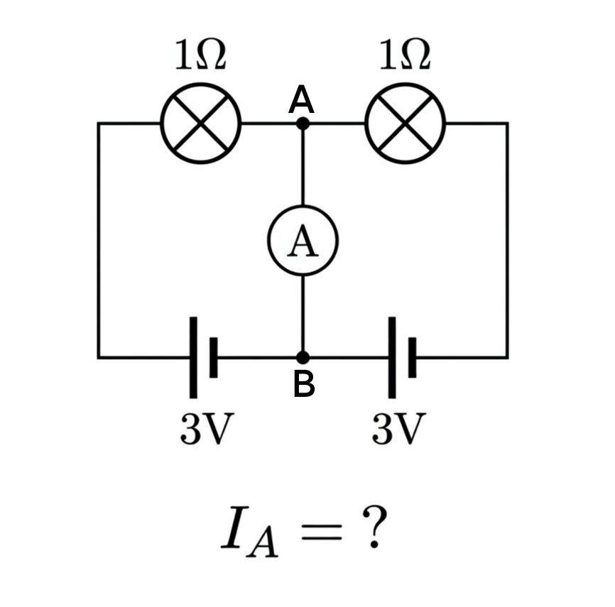

サイバー環状線
@CyberKanjousen
其实是大学电路。
将其拆成左右两个闭合回路，发现 AB 这根导线上的分电流大小相同方向相反，因此为零。
段点法也可以做。以 B 点为零电势点，A 点电势也为 0，最左、最右边两根导线上分别是 3V 和 -3V 。所以在水平方向上从左到右流入 A 点的电流为 3A ，水平方向上从左到右流出 A 点的电流为 3A，所 以自而下流出 A 点的为 0 A ，即 AB 段无电流。

汐落_shio
@Shioochic_Xyn
记得初中摆弄实验器材时突发奇想想出来了这样一个问题
在导线AB上电流怎么流呢？
似乎要学过高中物理才能解释 https://t.co/RnHJR1eZPC